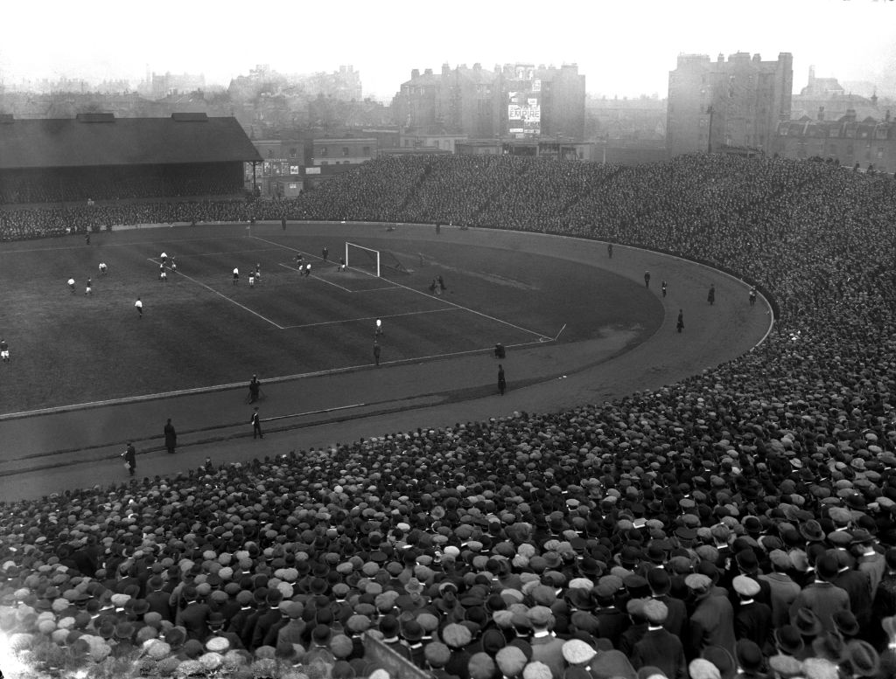

History
In 1904, Gus Mears acquired the Stamford Bridge athletics stadium with the aim of turning it into a football ground. An offer to lease it to nearby Fulham was turned down, so Mears opted to found his own club to use the stadium. As there was already a team named Fulham in the borough, the name of the adjacent borough of Chelsea was chosen for the new club; names like Kensington FC, Stamford Bridge FC and London FC were also considered. Chelsea were founded on 10 March 1905 at The Rising Sun pub (now The Butcher's Hook), opposite the present-day main entrance to the ground on Fulham Road, and were elected to the Football League shortly afterwards.
Chelsea won promotion to the First Division in their second season, and yo-yoed between the First and Second Divisions in their early years. They reached the 1915 FA Cup Final, where they lost to Sheffield United at Old Trafford, and finished third in the First Division in 1920, the club's best league campaign to that point. Chelsea had a reputation for signing star players and attracted large crowds; they had the highest average attendances in English football in ten separate seasons including 1907–08, 1909–10, 1911–12, 1912–13, 1913–14 and 1919–20. They were FA Cup semi-finalists in 1920 and 1932 and remained in the First Division throughout the 1930s, but success eluded the club in the inter-war years.
Former Arsenal and England centre-forward Ted Drake was appointed manager in 1952 and proceeded to modernise the club. He removed the club's Chelsea pensioner crest, improved the youth set-up and training regime, rebuilt the side with shrewd signings from the lower divisions and amateur leagues, and led Chelsea to their first major trophy success – the League championship – in 1954–55. The following season saw UEFA create the European Champions' Cup, but after objections from The Football League and the FA, Chelsea were persuaded to withdraw from the competition before it started. Chelsea failed to build on this success, and spent the remainder of the 1950s in mid-table. Drake was dismissed in 1961 and replaced by player-coach Tommy Docherty.
Docherty built a new team around the group of talented young players emerging from the club's youth set-up and Chelsea challenged for honours throughout the 1960s, enduring several near-misses. They were on course for a treble of League, FA Cup and League Cup going into the final stages of the 1964–65 season, winning the League Cup but faltering late on in the other two. In three seasons the side were beaten in three major semi-finals and were FA Cup runners-up. Under Docherty's successor, Dave Sexton, Chelsea won the FA Cup in 1970, beating Leeds United 2–1 in a final replay. The following year, Chelsea took their first European honour, a UEFA Cup Winners' Cup triumph, with another replayed win, this time over Real Madrid in Athens.
The late 1970s through to the '80s was a turbulent period for Chelsea. An ambitious redevelopment of Stamford Bridge threatened the financial stability of the club, star players were sold and the team were relegated. Further problems were caused by a notorious hooligan element among the support, which was to plague the club throughout the decade. In 1982, Chelsea were, at the nadir of their fortunes, acquired by Ken Bates for the nominal sum of £1, although by now the Stamford Bridge freehold had been sold to property developers, meaning the club faced losing their home. On the pitch, the team had fared little better, coming close to relegation to the Third Division for the first time, but in 1983 manager John Neal put together an impressive new team for minimal outlay. Chelsea won the Second Division title in 1983–84 and established themselves in the top division with two top-six finishes, before being relegated again in 1988. The club bounced back immediately by winning the Second Division championship in 1988–89.
After a long-running legal battle, Bates reunited the stadium freehold with the club in 1992 by doing a deal with the banks of the property developers, who had been bankrupted by a market crash. Chelsea's form in the new Premier League was unconvincing, although they did reach the 1994 FA Cup Final. The appointment of Ruud Gullit as player-manager in 1996 began an upturn in the team's fortunes. He added several top international players to the side and led the club to their first major honour since 1971, the FA Cup. Gullit was replaced by Gianluca Vialli, whose reign saw Chelsea win the League Cup, the UEFA Cup Winners' Cup and the UEFA Super Cup in 1998, and the FA Cup in 2000. They also mounted a strong title challenge in 1998–99, finishing four points behind champions Manchester United, and made their first appearance in the UEFA Champions League. Vialli was sacked in favour of Claudio Ranieri, who guided Chelsea to the 2002 FA Cup Final and Champions League qualification in 2002–03.
In July 2003, Bates sold Chelsea to Russian billionaire Roman Abramovich for £140 million. Over £100 million was spent on new players, but Ranieri was unable to deliver any trophies, and was replaced by José Mourinho. Under Mourinho, Chelsea became the fifth English team to win back-to-back league championships since the Second World War (2004–05 and 2005–06), in addition to winning an FA Cup (2007) and two League Cups (2005 and 2007). After a poor start to the 2007–2008 season, Mourinho was replaced by Avram Grant, who led the club to their first UEFA Champions League final, which they lost on penalties to Manchester United.
In 2009, under caretaker manager Guus Hiddink, Chelsea won another FA Cup. In 2009–10, his successor Carlo Ancelotti led them to their first Premier League and FA Cup Double, also becoming the first English top-flight club to score 100 league goals in a season since 1963. In 2012, Roberto Di Matteo led Chelsea to their seventh FA Cup, and their first UEFA Champions League title, beating Bayern Munich 4–3 on penalties, the first London club to win the trophy. The following year the club won the UEFA Europa League, making them the first club to hold two major European titles simultaneously and one of five clubs to have won the three main UEFA trophies. Mourinho returned as manager in 2013 and led Chelsea to League Cup success in March 2015, and the Premier League title two months later. Mourinho was sacked after four months of the following season after a poor start. In 2017, under new coach Antonio Conte, Chelsea won their sixth English title and the following season won their eighth FA Cup. In 2018 Conte was sacked after a 5th-place finish and replaced with Maurizio Sarri, under whom Chelsea reached the League Cup final, which they lost on penalties to Manchester City and won the Europa League for a second time, beating Arsenal 4–1 in the final. Sarri then left the club to become manager of Juventus and was then replaced by former Chelsea player Frank Lampard.